SQLエディタでのデータベース分析
SQL-Editor-for-Database-Analysis
概要
 |
このチュートリアルは説明のみを目的としています。チュートリアルに示されている接続文字列は、インストールされたデータベースには接続しません。チュートリアルで説明したプロセスを実行できるように、独自のサーバーに AdventureWorks データベースをセットアップする場合は、この GitHub ページを参照してください。
|
Origin は、ADO または ODBC を使用して、多くの一般的なデータベースからのデータのインポートをサポートしています。データが入力されたら、Originのデータフィルタと分析機能により分析テンプレートを用意します。このチュートリアルでは、このような分析テンプレートの作成方法と、保存した分析テンプレートをデータベースからインポートしたデータに適用して、分析結果を更新する方法を説明します。
必要なOriginのバージョン:Origin 9.0 SR0以降
学習する項目
このチュートリアルでは、以下の項目について解説します。
- SQLエディタを使ってデータベースから特定年のデータをインポートする
- 表示したい製品をしぼるために列フィルタを追加する
- 異なる国の異なる製品の合計コストのピボットテーブルを作成する
- 結果を確認するために棒グラフを作成する
- ワークシートにフローティンググラフを挿入して分析テンプレートとして保存する
- 保存した分析テンプレートをロードし、SQLクエリを変更してデータベースを再インポートし、他の年の分析を実行する
ステップ
サーバマシンnoho上にSQLサーバAdventureWorks2008を予めセットアップ済であることを想定しています。
データベースからデータをインポートする
- 新しいプロジェクトを開始します。データベースアクセスツールバーのSQLエディタを開くボタンをクリックしてSQLエディタを起動します。
- 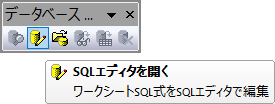
- メニューからファイル：接続文字列の編集を選択してテキストボックスに以下の接続文字列を入力します。
Provider=SQLOLEDB.1; Password=labtalk2015; Persist Security Info=TRUE; USER ID=CONNECT; Initial Catalog=AdventureWorks2008; DATA SOURCE=noho
- テストボタンをクリックして接続を確認します。問題なければ、OKをクリックしてデータベースにアクセスします。
- 以下のクエリをコピーして、SQLエディタのテキストボックスに貼り付けます。このクエリで2003年のデータを表示します。
SELECT CR.Name AS CustomerCountry,
Pr.Name AS ProductName,
Pr.Color AS ProductColor,
PC.Name AS ProductCategory,
PS.Name AS ProductSubcategory,
SOH.OrderDate AS OrderDate,
SOD.OrderQty AS OrderAmount,
SOD.LineTotal AS TotalCost
FROM Person.CountryRegion AS CR
INNER JOIN Person.StateProvince AS SP
ON SP.CountryRegionCode = CR.CountryRegionCode
INNER JOIN Person.Address AS A
ON A.StateProvinceID = SP.StateProvinceID
INNER JOIN Person.BusinessEntityAddress AS BEA
ON BEA.AddressID = A.AddressID
INNER JOIN Person.Person AS P
ON P.BusinessEntityID = BEA.BusinessEntityID
INNER JOIN Sales.PersonCreditCard AS PCC
ON PCC.BusinessEntityID = P.BusinessEntityID
INNER JOIN Sales.SalesOrderheader AS SOH
ON SOH.CreditCardID = PCC.CreditCardID
INNER JOIN Sales.SalesOrderDetail AS SOD
ON SOD.SalesOrderID = SOH.SalesOrderID
INNER JOIN Production.Product AS Pr
ON Pr.ProductID = SOD.ProductID
INNER JOIN Production.ProductSubcategory AS PS
ON PS.ProductSubcategoryID = Pr.ProductSubcategoryID
INNER JOIN Production.ProductCategory AS PC
ON PC.ProductCategoryID = PS.ProductCategoryID
WHERE SOH.OrderDate BETWEEN '1/1/2003' AND '12/31/2003'
- プレビューボタンをクリックして下側のパネルでクエリが表示するデータを確認します。
- 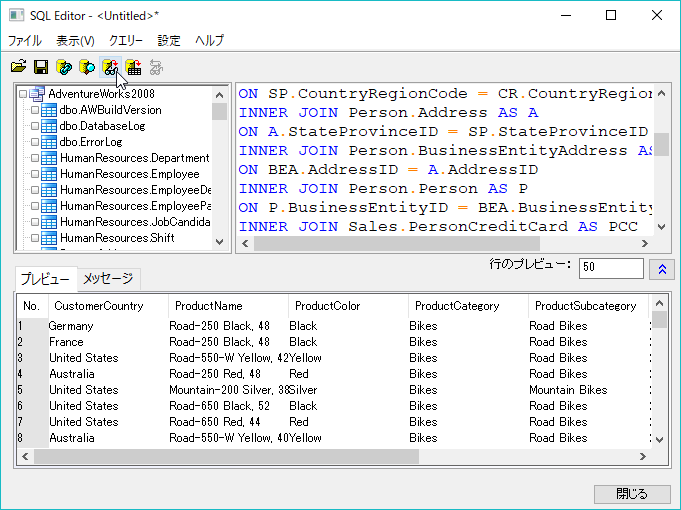
- SQLエディタダイアログで、メニューからファイル：アクティブワークシートに保存を選択して、データベース接続とクエリーをアクティブワークシートに保存します。SQLエディタを閉じます。
- データインポートボタンをクリックし、データをワークシートにインポートします。ワークブックの左上のアイコンは、そのシートにSQLクエリーが含まれることを示しています。
- 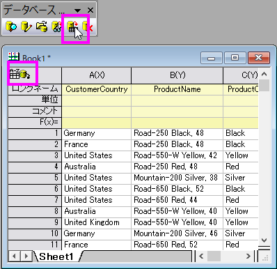
データフィルタ
- OriginにはExcelと同じようなデータフィルタ機能があります。この機能を使用して、残りのデータを削除することなく、グラフ化と分析のために特定のデータを選択できます。
- E列（ロングネーム：Product Subcategory)を選択します。分析用にバイクデータのみを選択するには、ワークシートデータ操作ツールバーのデータ フィルターの追加/削除ボタンをクリックして、この列にデータ フィルターを追加します。
- 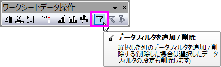
- 列ヘッダの左上にフィルタアイコンが表示されます。この上でクリックすると表示されるリストで、全て選択のチェックを外し、Mountain Bikes、Road Bikes、Touring Bikesを選択します。
- 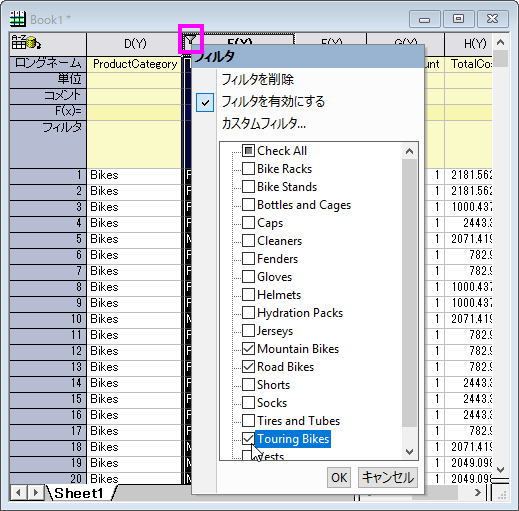
- 隠れたデータに関するメッセージが現れた場合には、はいを選択して、OKをクリックします。
- 3種類の自転車データだけワークシートに表示されます。
ピボットテーブルと棒グラフを作成
- ピボットテーブルを作成して、異なる国の自転車の種類についてそれぞれの合計コストを確認できます。
- ワークシートで何も選択せずに、メニューからワークシート：ピボットテーブル：ダイアログを開くと選択します。
- 開いたダイアログで、行ソースとして、CustomerCountryを選択します。
- 列ソースとして、ProductSubcategory（フィルタ付きの列）を設定します。
- 毎年の合計コストを確認するために、サマリー出力タイプを合計にして、ピボットテーブルのデータソースをTotal Cost に設定します。
- 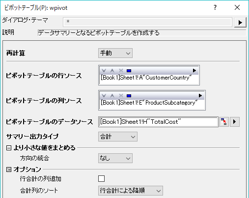
- OKをクリックします。Pivot1という新しいワークシートが作成されます。
- 最初の列の右上にある緑色の鍵マークをクリックし、コンテキストメニューで再計算モード: 自動を設定します。これにより、データがSQLエディタから再インポートされた場合に、ピボットテーブル操作が更新されます。
- 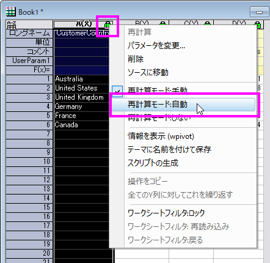
- 処理されたデータを選択して、縦棒ボタンをクリックして縦棒グラフを作成します。
- 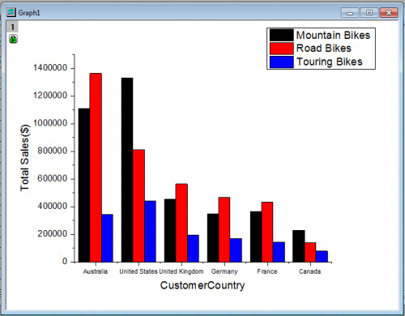
グラフを編集して分析テンプレートを作成
- Y軸タイトルをダブルクリックし、総売り上げ($)と入力します。
- Y軸をダブルクリックして軸ダイアログを開きます。
- Y軸のスケールタブにて、再スケールのドロップダウンで自動を選択します。OKをクリックします。
- 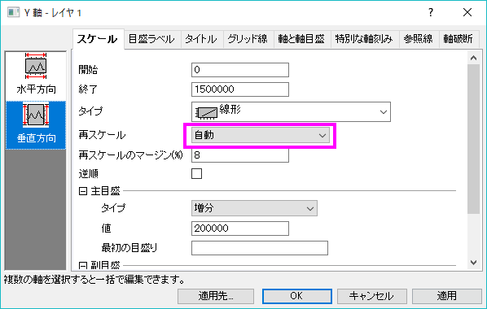
- グラフウを右クリックし、開いたコンテキストメニューから、 レイヤタイトルを追加/変更 を選択します。タイトルをBike Sales by Yearとします。必要があれば年のタイトルもこのように追加します。
ワークシートにフローティンググラフを追加して分析テンプレートとして保存
- ワークシートの灰色の部分を右クリックして、グラフを追加を選択し、元データのワークシートにグラフを追加します。
- グラフブラウザダイアログが開きます。グラフを選択してOKをクリックします。必要に応じてサイズ変更や移動を行ってください。グラフに編集を加えたい場合は、ダブルクリックしてグラフウィンドウで開き、編集します。編集後は、グラフウィンドウのタイトルバーにある、戻るボタンをクリックしてワークシートに戻ります。
- 1つのワークブックに、データベース接続、データフィルタ、分析（ピボットテーブル）、グラフのすべての要素を含めました。
- メニューから、ワークシート：ワークシートをクリアを選択し、ワークブックからデータをクリアするか尋ねられたら、はいを選択します。Note: 通常、分析テンプレートを保存するとデータが自動でクリアされますが、データベース接続の場合自動では行われません。そのため、ここではこの操作が必要です。
- メニューからファイル：ワークブックを分析テンプレートとして保存を選択するか、ワークブックタイトルバーを右クリックして分析テンプレートとして保存を選択し、テンプレートを保存します。
-
- 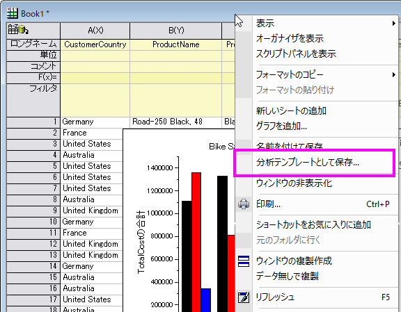
クエリを変更してデータを再インポートし、分析を自動的に更新
- メニューからファイル：最近使ったブックを選択して、先ほど保存した分析テンプレートをロードします。数値の入っていない、空のテンプレートワークブックが開きます。
- 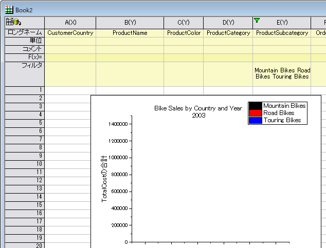
- SQLエディタを開くをクリックして、SQLクエリーがロードされたSQLエディタを開きます。2004年のデータを表示するように変更して、エディタを終了します。はいを選択して、ワークシートに変更を保存します。
- 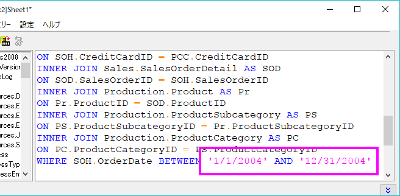
- データベースアクセスツールバーのデータのインポートボタン
 をクリックしてデータを再インポートします。
をクリックしてデータを再インポートします。
- フィルタの再適用ボタン
 でフィルタを再適用します。
でフィルタを再適用します。
- 全てのデータが更新されます。グラフは2004年のBike Salesを表示し、年のタイトルもグラフに反映されます。
- 作成したプロジェクトには2つのブックがあります。Book1には2003年のデータが、Book2には2004年のデータが入っています。
- 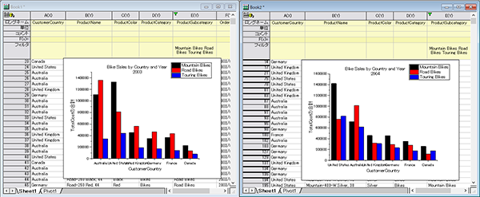
- このテンプレートとSQL再インポート機能により、SQLエディタで範囲を調整して再インポートするだけで、必要な年のBikeの売り上げを確認できます。